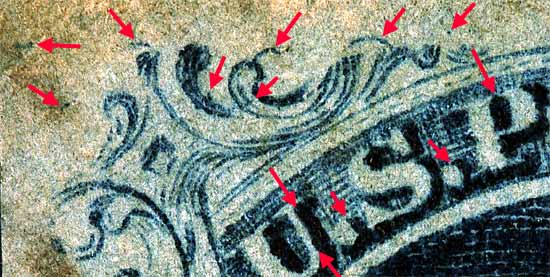

1¢ Franklin Issue of 1851-1857, PLATE 1 LATE.
Pos 2R1L, (Scott #9)
Type IV, Relief T
Issued both imperforate and perforated.
Perforated copies are more scarce.
DOUBLE TRANSFER
DOUBLE RECUT BOTTOM LINE
The EARLY state of the plate.
Positions 1R1E and 2R1E are in certain respects quite similar, in that their origins were identical. For both of these positions, the Type I relief roller was first used to enter these positions. An attempt was made to completely erase these positions (fresh-enter), but strong traces of both original entries remained after 1R1E and 2R1E were finally entered with the Type II relief roller. (which were further to the left by 0.75 mm than the final Type II relief roller entry)
Proof of the entry of the Type I relief roller is found in several places on 1R1E, 2R1E, 1R1L and 2R1L. Note particularly the upper left Ornament "S" on 2R1E and 2R1L. On the original Type I relief this ornament is complete, whereas it was trimmed down on the "T" relief Type II roller. 2R1E and 2R1L shows both examples of this entry. Also the curved line shown directly above the "S" of US on 2R1E and 2R1L was part of the complete ornament "V" of the Type I relief roller. This line was cut away on the "T" relief Type II roller.
The LATE state of the plate shown here.
The third and final reentry from 1E to 1L must have been performed very carefully on this position, and the only difference noted is that ornament L is very weak on the early state, and somewhat restored on the late state. All the remains of the DT on the early state seem to still be present on the late state. However, the 2 dots in the top margin above "OS" do not seem to occur on the early state. All the remains of the double transfer marks shown here can also be found on 2R1E. In the LATE state, 2 dots in the top margin above "OS" appear as well as the bottom double recut lines.


Thanks for visiting this site. I hope you learn something new as we are making new discoveries all the time. You, the visitor, have my permission to link to my pages and to share the INFORMATION with others. The images themselves fall under the fair use guidelines established by the United States Congress and Copyright law. Basically contact us before using. I also ask in return that you send me an e-mail if I have made a mistake, or have made some other technical blunder that in my rush to put these pages up would cause the visitor confusion. Please also visit my other website at www.slingshotvenus.com. and support the live music arts. While your there, be sure to purchase our music. There are not many philatelic rock stars around and we need all the help we can get. :-)
I can be reached at: nerdman@ix.netcom.com
Copyright © 2001-2009 Richard Doporto, Sonic Imagery Labs